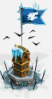
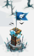
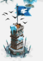
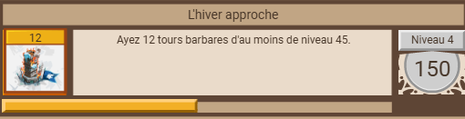

Tour barbare
Présentation
Equivalent des fieffé coquin au royaaume du glacier éternel, ils sont disposés partout. Commence vers le lvl 20 et 51 maximum. Le principe est le même : après une ou plusieurs attaque(s), le niveau augmente comme le butin.
A partir du niveau 70 (joueur) une ressource s'ajoute au butin classique (bois-pierre-bouffe) : le charbon.
Apparence
3 apparences sucessives, en fonction du niveau :
Au début (lvl 20)

Dès le lvl 38 environ

Du lvl 48-max :

Attaque
Attaquer une tour barbre peut répondre à plusieurs objectifs :
- quêtes rénégats des glaces
- piller des ressources
- trouver de l'équipement
- gagner des ruru
- Monter les tours pour plus de pillage
Rénégats des glaces


Equivalent du personnage "chevaliers errants" au grand empire, il possède un petit stand (tente) dont l'apparence ressemble au camp de l'espion. Le principe est le suivant :
- attaquer des tours barbares
- certaines tours permettent de trouver des morceaux de cartes
- lorsque la carte est complètes, les rénégats des glaces sont libérés
- en récompense 80 mêlée et 80 distance
Les ruru
Attaquer des tours barbares (comme les tours du désert ou des pics) permet (parfois) de gagner 7 à 15 ruru/attaque.
Pillage
Pour gagner un max de pièces, il est conseillé d'avoir le personnage du maraudeur.
Ainsi, avec une tour barbare au max (lvl. 51) c'est 27.7k pièces/attaque.
Monter les tours barbares proches de votre cp du glacier est un bon moyen de gagner des pièces (encore plus vrai aux sables et aux pics).
Autres points : il y a un succès pour le nombre de tours barbares d'un certain niveau.

En pratique
Exemple de pillage sur une tour barbare lvl 51 (max) avec le maraudeur activé :